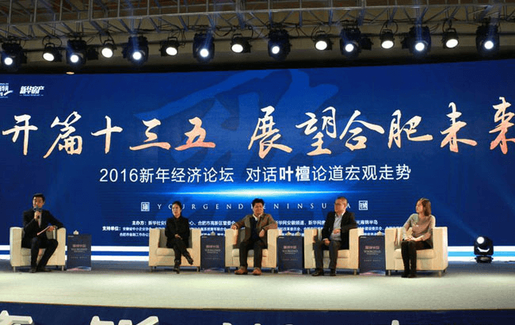
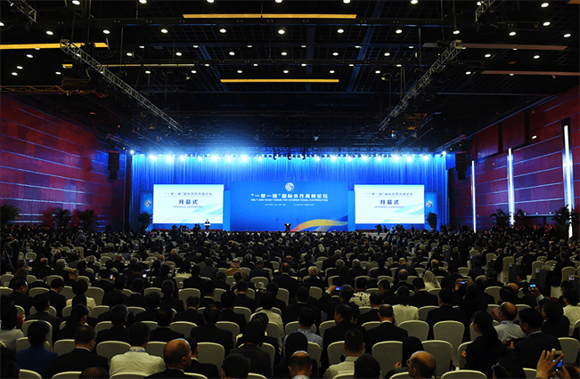

由中国食品和包装机械工业协会、汤臣倍健股份有限公司、上海中商网络股份有限公司（简称CCN中商）、中国食品工业互联网产业联盟共同发起，邀请知名食品企业共同组织策划的万物互联·智慧工厂 2017中国食品行业物联技术应用高峰论坛于2017年6月27日圆满落幕，本论坛深受参会企业好评，参会人员逾200人。
来自美赞臣、中粮集团、完美 (中国) 有限公司、合生元、宝洁、洽洽食品股份有限公司等近100家企业齐聚一堂交流了企业在信息化转型、实施和深化的问题和难点。


会议设置了中国食品工业智能制造现状及发展趋势、智能工厂连续生产CD&项目发布、小数码 大梦想——CCN智慧追溯系统介绍、新零售数字化解决方案四大议题。中国食品和包装机械工业协会副秘书崔林进行了开场致词，并对当前我国食品装备与互联网融合的背景进行了深刻分析，汤臣倍健股份有限公司首席运营官蔡良平做了关于智能工厂的战略分析和实践总结。
作为产品数字化行业的领导品牌，上海中商网络股份有限公司（简称CCN中商）技术总监蒋心武将向数十个与会食品企业介绍怎样通过一物一码打造透明工厂、产品赋码如何实现、赋码系统的特点和优点、一物一码为消费者和政府带来的价值等技术干货。同时，针对食品企业消费速度较快、同质化程度高、竞争激烈的行业特性，CCN中商子公司据震总经理庞赫然也带来了新零售营销方面的洞见——新零售的特点、与传统零售的对比、新零售业务三阶段规划、玩法和使用场景，以及大数据分析带来的商业价值等。两位主讲人的演讲内容丰富，重点鲜明，获得与会嘉宾的阵阵掌声。
为了向食品企业在物联网时代的信息化应用提供具体可行的发展思路，论坛针对每个议题均设置了Q&A环节，与会的食品企业嘉宾得以现场提出问题，观点碰撞。另安排有实地参观汤臣倍健智能工厂，进行问答讲解，使与会企业有机会了解国内顶尖的信息化工厂实践进展，并分享自身的见解和经验。
本次论坛交流了智能工厂实践中的最新动态、剖析企业在信息化转型、实施和深化的问题和难点，食品信息化主流厂商汤臣倍健现场分享了智慧工厂的解决方案和典型案例，全面推进信息化技术在食品饮料行业的应用，推动我国食品饮料企业建立起覆盖全方位的采购管理、生产管理、成本管控、质量追溯业务流程体系。